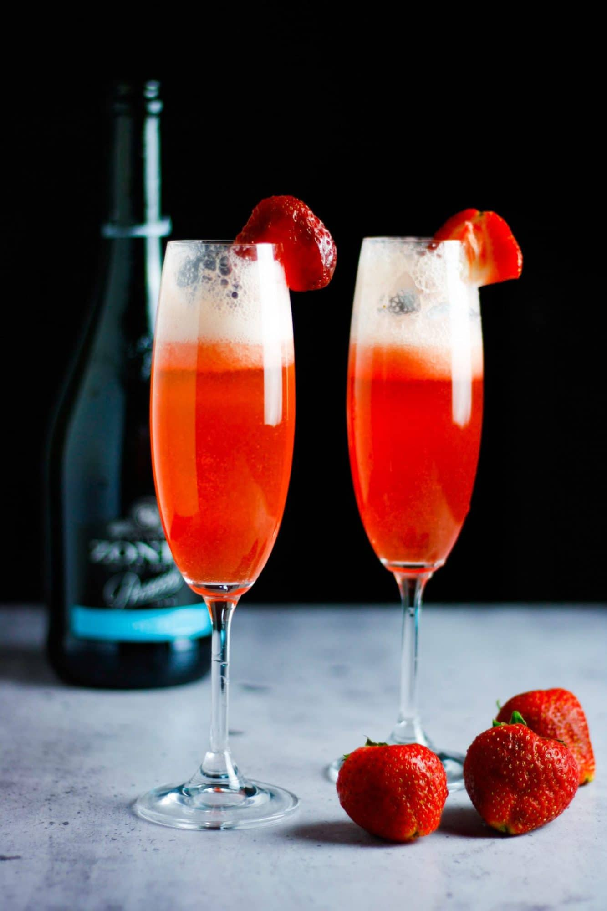

Strawberry Bellini

A nice drink for Mother's Day, a brunch, or a shower.
A simple, sweet, delicious and elegant strawberry Bellini.
This easy strawberry cocktail is made with Prosecco and real, fresh strawberry juice.
Perfect for a fancy brunch or an evening cocktail.
The best sorts of cocktails are the ones that look fancy, taste amazing and don’t require a ton of ingredients to make.
This strawberry bellini recipe is one of the simplest drinks you can make so no one should be intimidated to try this one.
ingredients
- 3 cups strawberries, hulled and sliced
- ¼ cup confectioners' sugar
- 1 tablespoon brandy
- 1 ½ cups chilled sparkling wine
- 3 large strawberries
Directions
- Blend 3 cups strawberries, confectioners' sugar, and brandy together in a blender until smooth.
Chill in refrigerator for 10 minutes.
- Divide the strawberry mixture among 3 champagne flutes; top each with about 1/2 cup sparkling wine; stir.
Garnish each glass with 1 strawberry.